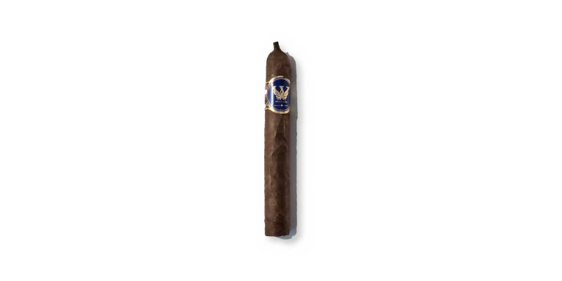

Willys Cigars · Chihuahua
By Willys Cigars · Área metro (Guaynabo / San Juan), Puerto Rico
Handmade in Puerto Rico. Photo from Willys Cigars (Oct 2026); name confirmed by Sergio; vitola and blend to be confirmed.
Sources: 1
See Willys Cigars · Chihuahua in the app, rate it and save it to Mi Hoja.